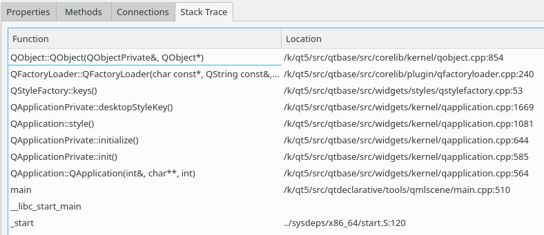

The stack trace view is available for all QObject instances and shows the call stack leading to the creation of this object.

The stack trace view shows the function name and source code location for each call, as far as this information is available. You can navigate directly to the corresponding source code using the context menu.
Source locations are usually only available if debug information are found for the corresponding executable or library. Object creation stack traces are only gathered on platforms where this is possible with limited runtime cost, and therefore are not available for all target platforms.